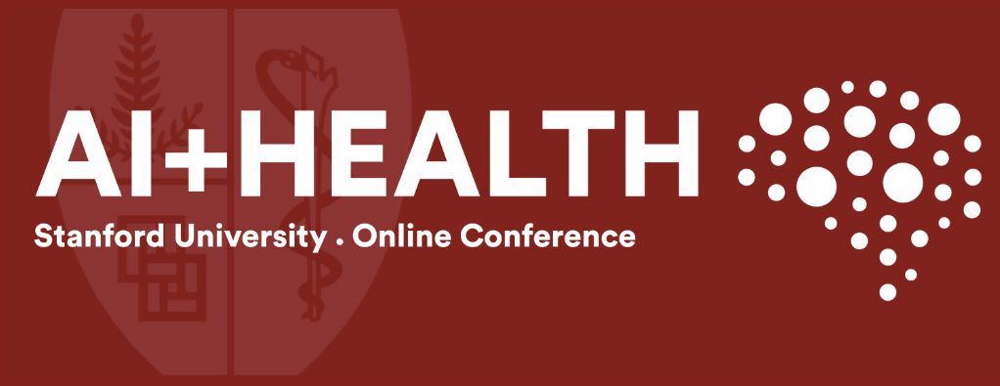

Welcome back to another week of [VS]Codes! Last week, I had the opportunity to attend the fourth annual Stanford AI + Health conference, a virtual conference hosted by the Stanford Center for Artificial Intelligence in Medicine and Imaging (AIMI), exploring real-world AI applications across healthcare. I very much enjoyed hearing perspectives on integrating AI into healthcare systems from a variety of panelists from several different organizations (and I would highly recommend anyone interested in these topics attend their conference next year!). This blog post summarizes my notes from each of the panels that I attended and offers some of my biggest overall takeaways.

1. Innovating at the Speed of Trust
- Daniel Yang, MD - VP of AI and Emerging Technologies, Kaiser Permanente
The opening keynote of the conference presented by Dr. Daniel Yang centered on the importance of trust in driving innovation in the field of health AI. Indeed, introducing AI to the clinic requires full involvement from the clinician. Clinicians need to understand how the AI systems being implemented work so that they can decide when such systems can be trusted and when they might lead us astray. Without trust, even the most advanced AI systems will be unable fulfill their full potential.
The need for AI in healthcare today
Today, there is an ever-growing mismatch between healthcare supply and demand. We face an aging population, as well as a new patient focus on convenience and a desire for hybrid approaches to healthcare. At the same time, the healthcare workforce is being stretched thin due to a shortage of workers and a bottleneck in the training time needed to produce new clinical experts. The consequences of this mismatch include rising healthcare costs, physician burnout, and limited access to treatment. AI has the potential to accelerate our ability to provide more healthcare to more people in need.
Building a Framework for Trust
The speed of progress in health AI will ultimately depend on the speed of trust. Any missteps, such as patient harm or tools that fall short of expectations, will slow innovation considerably. A lot of time has been spent in developing a technology stack for AI to enhance its performance - key components of this “AI Tech Stack” include AI applications, cloud platforms, foundation models, and computing hardware. At the same time, the acceleration of AI and the reduction of the trust gap requires us to consider another missing stack - the “Human Stack,” made up of people, priorities, processes, and policies.
People: 60% of Americans are uneasy about their providers using AI. Building trust will require rigorous trials, clinical evidence, and robust safety protocols.
Priorities: Focusing on “lighthouse use cases” help demonstrate AI’s value while targeting the areas of greatest impact.
Processes: Seamless integration of models into existing practiced workflows is vital.
Policies: Equitable adoption will require financial and policy frameworks to prevent an “AI divide” between well-resourced and underserved healthcare systems.
Financial Incentives for Responsible AI
A critical question raised during the discussion was how to incentivize responsible AI. Currently, the burden of risk and implementation often falls on healthcare delivery systems themselves, posing challenges for smaller organizations with fewer resources. Policymakers could draw lessons from the 2009 HITECH Act, which spurred electronic health record (EHR) adoption by ensuring minimum standards and equitable access.
Dr. Yang’s talk concluded that the key to unlocking AI’s transformative potential lies not only in advancing technology but in earning the trust of both patients and providers through safety, evidence, and equitable frameworks.
2. Building Organizational Frameworks for Sustainable AI Programs
Kimberly McManus, MS PhD - Deputy Chief AI Officer, Department of Veterans Affairs
Nikesh Kotecha - Head of Data Science, Stanford Health Care
Mark Sendak, MD MPP - Population Health and Data Science Lead, Duke University
Sara Vaezy - EVP and Chief Strategy and Digital Officer, Providence Health
Establishing sustainable AI programs in healthcare requires robust frameworks that integrate governance, infrastructure, and workforce development while prioritizing responsible implementation and patient-centric use cases. Leaders from institutions including the VA, Stanford, Duke, and Providence Health shared their approaches to scaling AI effectively.
Key Components of Sustainable AI Frameworks
Governance and Guardrails
VA’s Hub-and-Spoke Governance Model: Balances local accountability with innovation under centralized oversight, including an AI Governance Council addressing ethics, privacy, and cybersecurity.
Public transparency is prioritized through inventories like the VA’s Public AI Use Case Inventory and its established minimum requirements for sensitive AI, such as real-world impact assessments and monitoring discrimination risks.
Providence Health emphasized transparency and patient/community involvement in AI initiatives to build trust and measure progress.
Infrastructure and Technology
Institutions like the VA and Stanford Medicine highlighted the need for modular and flexible data pipelines to support AI development and deployment. Examples include the VA’s Enterprise Data Platform (SUMMIT) and Stanford’s interoperable data lake connected to large language models.
Duke advocated for “π-shaped” rather than “T-shaped” expertise (personnel skilled in across multiple domains) to drive innovation while addressing infrastructure needs.
Workforce Development and Leadership
The VA focused on communication, training, and hiring to grow its AI workforce, while Stanford integrated leadership commitment with frameworks like the Responsible AI Lifecycle to guide operations and governance.
Duke emphasized forward-looking leadership and embedding expertise across domains to align project selection with innovation goals.
Prioritizing Use Cases for Maximum Impact
VA Priority Use Cases: Focus on decreasing clinician burnout, improving care quality, and leveraging AI for risk prediction, patient feedback, and medical devices. Pilots include AI scribes and generative AI for documentation.
Stanford Medicine: Targets efficiency with solutions like reducing physician workload, streamlining clinical documentation, and using predictive models.
Duke’s Domains of Innovation: Include health delivery science, technology innovation, and workforce development, emphasizing transformational breakthroughs that prepare organizations for future challenges.
Embedding Responsibility in AI Deployment
Effective frameworks ensure accountability across every stage of the AI lifecycle—from model development to operational monitoring.
All institutions stressed the importance of designing workflows around AI tools and defining clear roles for accountability.
Incorporating Patient and Community Voices
Patient and family advisory councils, focus groups, and community engagement initiatives are key to identifying pain points and building trust.
Transparency about AI usage in clinical care fosters alignment and trust between institutions and the communities they serve.
Guiding Principles for Sustainable AI
Build responsibly by addressing systemic challenges, including the AI divide between resource-rich and under-served settings.
Support innovation with flexible, scalable infrastructure to ensure post-market success and sustainable impact.
Prioritize patient and clinician needs over adopting AI for its own sake, aligning initiatives with tangible benefits.
By embedding governance, infrastructure, and patient engagement into AI programs, these organizations demonstrate how healthcare systems can scale AI sustainably while fostering trust and equity.
3. Evaluating and Deploying AI Tools: The FURM Model
Dev Dash, MD, MPH - Clinical Assistant Professor, Stanford University
Lance Downing, MD - Clinical Assistant Professor, Stanford University
Sneha Jain, MD MBA - Clinical Assistant Professor, Stanford University
Timothy Keyes, PhD - Data Scientist, Stanford Health Care
Deploying AI tools in healthcare involves more than just developing high-performing models - it requires a comprehensive framework to assess their fairness, usefulness, reliability, and alignment with real-world constraints. Stanford’s FURM (Fairness, Usefulness, Reliability, and Monitoring) model provides a structured approach to evaluating and integrating AI tools into clinical workflows responsibly.
The FURM Assessment Framework
Stage 1: Pre-Deployment (What and Why)
Define the problem and assess the need for an AI solution.
Simulate workflow integration to estimate usefulness and financial impact.
Consider ethical implications and potential risks before proceeding.
Stage 2: Deployment (How)
Develop, test, and integrate the model into existing infrastructure and organizational workflows.
Ensure alignment with operational policies and stakeholder capacities.
Stage 3: Post-Deployment (Impact)
- Conduct prospective evaluations and ongoing monitoring to assess outcomes and address emerging issues.
Key Considerations for Deploying AI in Healthcare
Identifying the “Job to Be Done” (JTBD)
AI tools must address specific operational or clinical needs. Stakeholders adopt tools not for their novelty but to achieve tangible progress. Defining these JTBD upfront ensures that AI solutions align with practical goals.AI-Guided Workflows
AI models operate within complex systems constrained by policies, capacities, and real-world dynamics. For example:AI for detecting undiagnosed Peripheral Artery Disease (PAD) was constrained by reimbursement policies, leading to targeted testing only for symptomatic patients.
LLMs for nursing end-of-shift reports revealed cultural and operational challenges, such as balancing template flexibility with nurse preferences.
Analyzing Usefulness
Stanford’s APLUS Python library evaluates AI models within realistic, capacity-constrained workflows.
Correct and incorrect decisions are weighed according to their differing impacts on patients and healthcare systems.
Cost and Operational Implications
Deployment decisions must consider the cost of building and sustaining AI workflows, as well as downstream financial and clinical impacts.
Case studies highlighted how savings in time don’t always translate to financial benefits or improved care outcomes.
Addressing Ethical Issues in Healthcare AI
Stakeholder Alignment
- Ethical concerns arise from misaligned values among clinicians, developers, and patients. Organizations must mediate these differences through intake interviews, stakeholder analysis, and actionable reports. For instance, skepticism about LLMs improving documentation efficiency underscores the need for transparent communication and measurable results.
Broader Ethical Vision
- Ethical recommendations must translate into concrete actions to mitigate risks. Stanford is developing a “playbook” to guide other healthcare systems in addressing ethical concerns effectively.
Realizing Value Beyond Models
Successful AI deployment is not just about the AI model but also the policies, workflows, and actions that surround it. By combining rigorous evaluations with thoughtful integration, the FURM framework ensures AI tools are not only effective but also equitable, ethical, and aligned with healthcare priorities.
4. Data Governance and Quality Assurance in Healthcare AI
Leo Anthony Celi, MD MS MPH - Senior Research Scientist and Associate Professor of Medicine, MIT and Harvard Medical School
Cora Han, JD - Chief Health Data Officer, University of California Health
Michael Pfeffer, MD FACP - Chief Information Officer, Stanford Health Care and Stanford School of Medicine
Aditya Sharma - Senior Manager, TDS Data Science Innovation at Stanford
Ensuring high-quality, secure, and reliable data is foundational to the success of AI in healthcare. However, the complexities of the healthcare data ecosystem demand innovative approaches to governance, interoperability, and quality assurance.
The Reality of Healthcare Data
Healthcare data is not a pristine, static resource like a “lake in the Alps,” but rather a dynamic, often chaotic “deluge” of multi-modal, ever-evolving information. Addressing this fluidity is key to effective data governance.
Key Challenges in Healthcare Data
Interoperability and Data Drift
Data Shift: Differences between training data and real-world inference data result in mismatched populations and ontologies.
Data Normalization: Health code definitions evolve, creating discrepancies between static model labels and changing clinical realities.
Multimodality: The healthcare data landscape spans diverse modalities, complicating integration and analysis.
Data Availability: Time stamps in electronic health records (EHRs) often fail to reflect real-world conditions, reducing data reliability.
Workflow Design and Transferability
AI performance depends on the workflows and data structures underlying it, which may not transfer effectively between institutions.
The ability to modify workflows and data structures introduces variability that impacts both model and operational performance.
Lifecycle Management
Managing data drift in externally created models is crucial to ensuring consistent performance.
Deciding when and how to retrain or deprecate models requires timely and sufficient data collection, which is often challenging.
Social Dynamics in Data Generation
Healthcare data is generated within a socially patterned and non-neutral space, reflecting biases and inequities. While AI has the potential to disrupt the status quo, its design and deployment must be deliberate to avoid perpetuating existing disparities.
Standards and Frameworks
The NIST AI Risk Management Framework provides a structured approach to addressing these challenges, emphasizing the importance of governance, transparency, and quality assurance in healthcare AI systems.
Workforce Limitations
Healthcare systems face unique constraints, including difficulties in recruiting data scientists compared to tech companies. This underscores the need for innovative strategies to build internal capacity and ensure robust governance.
Path Forward
AI in healthcare must be built on a foundation of rigorous data governance, ensuring not only technical excellence but also ethical and equitable practices. By addressing the fluid and complex nature of healthcare data, organizations can create AI systems that are reliable, transferable, and transformative.
5. Large Language Models (LLMs) in Healthcare
- Nigam Shah, Professor of Medicine and Biomedical Data Science, Stanford University
Large Language Models (LLMs) represent a transformative opportunity for healthcare, leveraging vast amounts of data to generate predictions, insights, and text-based interactions. However, their effective application in clinical settings requires balancing innovation with responsible deployment.
Understanding LLMs
LLMs are trained by masking portions of input data (e.g., text) and using a Transformer model to predict the missing elements. The result is a numeric embedding - a representation of the input data that can be used for downstream tasks, including:
Classifier Features: Supporting machine learning models for prediction.
Text Output: Facilitating human-AI interaction.
LLMs are a subset of foundation models, which generalize across symbol vocabularies (e.g., sounds, pixels, or ICD codes). For example:
- Predicting the likelihood of certain ICD codes over a timeline rather than generating the next word in text.
Two Key Approaches in Healthcare AI
Clinical Language Models (CLaMs)
Focus on textual outputs and generative tasks.
Example: Summarizing clinical notes or generating predictions from text representations.
Foundation Models for Electronic Medical Records (FEMRs)
Focus on patient timelines and numerical embeddings for prediction tasks.
Example: Predicting patient outcomes by analyzing sequences of events in their medical history.
Shared EHR Structures Enable Transferability
EHRs exhibit consistent patterns that allow models to transfer learned embeddings to new tasks. This shared structure is a key advantage of foundation models in healthcare.
Challenges and Priorities
While foundation models and LLMs hold great promise, the healthcare community faces challenges in scaling their deployment:
Verification of Benefits: There are too many models being developed and not enough focus on ensuring their utility in real-world settings.
Responsible Innovation: As these models are integrated into health systems, balancing innovation with ethical and operational considerations is crucial.
LLMs and foundation models are powerful tools for advancing healthcare AI, but their deployment must prioritize patient outcomes, system integration, and ethical use.
6. Generative AI in Healthcare
Jason Fries, Stanford University
Kati Link, Hugging Face
David Magnus, Stanford University
Ron Li, Stanford University
Generative AI offers transformative potential for healthcare, expanding the axes of evaluation beyond traditional measures. By leveraging foundation models and emerging datasets, generative AI aims to enhance clinical decision-making, streamline workflows, and introduce novel human-AI interactions.
Expanding Axes of Evaluation
Generative AI enriches evaluation metrics, focusing on:
Improved Accuracy: Achieving better predictive performance.
Reduced Need for Labeled Data: Leveraging fewer labeled examples through transfer learning.
Simplified Deployment: Facilitating integration within hospital systems.
Multimodal Capabilities: Combining text, imaging, and other data types.
Emergent Applications: Discovering novel use cases.
Human-AI Interfaces: Redefining how humans and machines collaborate.
Transfer Learning in Practice
Foundation models capitalize on the shared structure of healthcare data, adapting to smaller, specific use cases through techniques like transfer learning. An example is EHRSHOT, a benchmark for few-shot evaluation of foundation models in EHRs.
Multimodal Datasets and Evaluation
Datasets such as IMPACT, a multimodal dataset for predicting pulmonary embolism outcomes, demonstrate the shift towards richer, more diverse evaluation frameworks. Moving beyond datasets like MIMIC, these efforts push AI systems to operate effectively across real-world scenarios.
Two Worlds of Evaluation
Generative AI in healthcare spans two primary domains:
Natural Language Models (CLaMs)
Information Extraction: Pulling structured insights from unstructured text.
Assistive Writing: Drafting responses to patient messages.
Question Answering: Providing clinical insights or recommendations.
Medical Codes and Timelines (FEMRs)
Risk Stratification: Identifying high-risk patients.
Time-to-Event Models: Predicting clinical outcomes over time.
Phenotyping: Identifying patient subgroups based on shared characteristics.
Building Better Evaluation Tasks
There is a pressing need for new benchmarks that assess how AI models improve human decision-making and outcomes when humans are part of the workflow. Evaluation must extend beyond algorithms to the broader impact of AI systems in practice.
Linguistics and Generative AI
The importance of semantics and context in medicine underscores the value of generative AI in addressing both discriminative and generative tasks, bridging gaps in communication and understanding within healthcare.
Generative AI continues to evolve, with organizations like HuggingFace driving democratization and innovation. By enriching evaluation criteria and focusing on meaningful human-AI collaboration, generative AI is poised to redefine healthcare delivery.
7. Building In-House AI Solutions in Healthcare
Oliver Aalami, MD - Clinical Professor in Vascular Surgery, Stanford
Toyin Falola, MD - AVP of Clinical Product Strategy, Providence Health
Ron Li, MD - Medical Informatics Director for Digital Health, Stanford Health Care
Ashwin Nayak, MD MS - Clinical Assistant Professor of Medicine, Stanford University
Developing AI solutions in healthcare requires a holistic approach that goes beyond model development to address user experience, workflows, and care models. By integrating AI into broader systems of care delivery, organizations can foster both innovation and meaningful impact.
AI Beyond Models
The innovation space in healthcare extends far beyond creating better AI models. True transformation happens when AI:
Delivers actionable information paired with intuitive user experiences.
Integrates into care models that encompass people, processes, and technologies.
Focuses not just on building better models, but also on enhancing user interfaces, streamlining processes, and reimagining care delivery systems.
Two-Speed System for Innovation
Healthcare innovation can follow two complementary tracks:
Enterprise Care Delivery Transformation
Focuses on deploying scalable solutions across the system.
Leverages strong clinician engagement to drive adoption.
Grassroots Innovation
Emphasizes rapid prototyping and iteration.
Leverages clinician feedback to refine solutions and address specific care delivery challenges.
Stakeholder Commitment
The success of healthcare AI depends on deep commitment from all stakeholders. The “chicken and the pig” parable highlights the importance of active engagement and ownership across teams, rather than passive involvement.
Health System Product Development Principles
To build effective in-house AI tools, healthcare organizations should:
Identify the Problem: Clearly define the issue to solve.
Explore All Options: Consider a wide range of approaches.
Focus on Use-Cases and Users: Center development around real-world applications and user needs.
Secure Executive Sponsorship: Obtain leadership buy-in to ensure resources and alignment.
Assemble Multi-Disciplinary Teams: Bring together diverse expertise.
Obsess Over ROI and KPIs: Keep a sharp focus on measurable outcomes.
Engage Stakeholders: Build support across the organization.
Align with System-Wide Goals: Ensure AI initiatives complement broader priorities.
Privacy and Cost Innovations
Concepts like fog computing (privacy-preserving, low-cost distributed computing) offer promising solutions for AI deployment in healthcare, addressing concerns around data security and cost.
Fostering a Culture of Innovation
To align strategic priorities while encouraging creativity:
Use idea canvases and templates to structure brainstorming.
Apply design thinking to keep efforts human-centered.
Adopt shared technology tools to facilitate collaboration.
Focus on solutions that directly address the specific problems at hand.
By taking a user-centered, strategic, and multidisciplinary approach, healthcare organizations can build in-house AI solutions that are impactful, scalable, and aligned with their mission.
8. Shaping the Future of Responsible AI in Healthcare
David Magnus, PhD - Thomas Raffin Professor of Medicine and Biomedical Ethics, Stanford University
Daryl Oakes, PhD - Associate Dean of Graduate Medical Education and Clinical Professor of Anesthesiology, Stanford University
Ziad Obermeyer, MD - University of Berkeley
David Rhew, MD - Global Chief Medical Officer and VP Healthcare, Microsoft
The future of AI in healthcare lies in its ability to act as an ally in improving care delivery, rather than merely a replacement for existing processes. By addressing challenges in deployment, ensuring transparency, and prioritizing patient outcomes, AI can transform healthcare responsibly and equitably.
Federated Learning and Data Standardization
Federated learning offers a promising path for collaborative model training without sharing sensitive data. However, its success hinges on overcoming barriers such as data standardization and interoperability. Tools like those offered by AIMI’s shared datasets aim to advance these efforts by providing accessible resources for model development.
Four Pivotal Themes
Integration Over Innovation Alone
Success in healthcare AI depends not just on creating the best algorithms but embedding them into workflows that support, rather than replace, clinicians.Deployment in Real-World Settings
Moving AI from research to practice requires addressing complex challenges across hospitals, clinics, and outpatient centers, where the focus is on maintaining high-quality care.Training, Transparency, and Trust
To foster adoption, prioritize clear communication about how AI systems work, offer robust clinician training, and ensure user-centered design.Equity and Ethical Data Use
Work with representative, accurate, and ethically sourced data to build equitable AI systems that benefit all patients.
Challenges and Priorities
Deployment in healthcare settings often encounters hurdles such as:
Data Interoperability: Bridging gaps between systems and standards.
Clinician Burnout: Avoiding tools that add to administrative burdens.
Trust and Transparency: Ensuring users understand and can rely on AI outputs.
A Commitment to Patients
Ultimately, responsible AI in healthcare demands equity, transparency, collaboration, and a steadfast focus on improving patients’ lives. By aligning technology with clinical needs and ethical principles, healthcare systems can shape a future where AI enhances care quality, efficiency, and accessibility.
9. GenAI and LLMs in Healthcare: Potential and Risks
- Roxana Daneshjou, MD PhD - Stanford University
The integration of Generative AI (GenAI) and Large Language Models (LLMs) into healthcare represents both groundbreaking potential and significant risks. Understanding their underlying mechanics, evaluating their performance, and addressing safety and bias concerns are critical steps to ensure responsible adoption.
How LLMs Work
Transformers revolutionize AI by enabling models to focus on contextually distant parts of text, enhancing comprehension and prediction.
Training Process:
Pre-training: Models learn patterns from large datasets (e.g., the internet, textbooks) using self-supervised learning by predicting masked words without human involvement.
Fine-tuning: Refines models with reinforcement learning and human feedback to improve output quality.
Prompting: Adjusts model responses without modifying the model itself, using techniques like Chain-of-Thought prompting to guide reasoning.
Challenges in LLM Development
Rapidly Evolving Landscape: Surveys of LLMs become outdated quickly due to constant advancements.
Ethical Concerns:
Risk of perpetuating false race-based medical practices (e.g., Omiye et al., npj Digital Medicine, 2023).
Bias and safety issues uncovered through “red-teaming,” where vulnerabilities like factual inaccuracies and inappropriate responses are tested in simulated clinical settings.
Vision-Language Models (VLMs)
Utilize contrastive learning to link text and images for tasks such as zero-shot predictions.
While promising, VLMs are not yet reliable for clinical application.
Key Takeaways
Emerging Impact: GenAI is beginning to influence healthcare, offering tools to improve clinical workflows and patient care.
Potential Benefits: Improved diagnosis, decision support, and efficiency in medical settings.
Caution Required: VLMs and other GenAI tools remain in development, requiring careful evaluation, ethical considerations, and stakeholder collaboration before widespread deployment.
To responsibly leverage GenAI, healthcare must prioritize safety, transparency, and equity, ensuring these technologies enhance care without introducing new risks.
10. Scaling AI and Overcoming Deployment Challenges
Angela Aristidou - University College London and Stanford University
Julia Adler-Milstein, PhD - Professor of Medicine and Chief of the Division of Clinical Informatics and Digital Transformation, UCSF
Jonathan Hron, MD - Associate Chief Medical Information Officer, Boston Children’s Hospital
Vincent Liu, MD MS - Northern California Division of Research and Chief Data Officer, Kaiser Permanente
Ida Sim, MD PhD - Professor of Medicine and Computational Precision Health, UCSF
The implementation of AI in healthcare presents significant challenges, particularly when transitioning from AI development to real-world clinical use. Key discussions from experts highlight various approaches to scaling AI, ensuring trustworthiness, and overcoming deployment hurdles.
Bridging the Gap Between AI and Clinical Implementation
Dr. Aristidou outlined two primary approaches to scaling AI:
Homegrown AI: Single-function AI models that are scaled across different institutions, a process that requires adaptation to diverse environments.
Platform AI: AI apps hosted on a unified platform, with scalability built into the model. The challenge is whether real-world organizations will adopt such systems.
Critical Thinking and Foundation Building in AI
Dr. Hron emphasized the importance of applying AI thoughtfully in healthcare. He stresses:
Avoid using AI just for the sake of using it.
The need to build a solid foundation that aligns AI with healthcare delivery, ensuring equity, effective use, and proper training.
Tools like ambient Llstening and GenAI Reference Tools (e.g., ClinicalKey) can enhance AI utility, but their impact must be evaluated carefully.
Ensuring Trustworthiness in AI
Dr. Adler-Milstein highlighted the difficulty health systems face in assessing AI’s trustworthiness:
AI tools often lack standard regulations, and healthcare systems may not have the capacity to evaluate them.
She proposes a robust AI Oversight Committee to oversee the AI lifecycle from discovery to adoption, ensuring tools are trustworthy and continuously monitored.
IMPACT (AI Monitoring Infrastructure and Adjudication Process) can provide ongoing vigilance, tracking AI’s effectiveness and outcomes in real time.
Incentives and System Integration
Dr. Liu discussesed the shift from “push” to “pull” in AI adoption:
Pull: Creating systems where AI’s value is clear - improved care, productivity gains, reduced errors, and cost savings.
Push: Overcoming challenges such as cost, data privacy, and technical issues that impede adoption.
The Prediction:Action Dyad emphasizes balancing system capacity, intervention costs, and potential harms when implementing AI-driven decisions.
Modular Approaches to AI Integration
Dr. Sim stressed the need for modular, evolving AI solutions that can integrate with health systems:
AI must be adaptable, with individualized solutions that evolve over time rather than a one-size-fits-all approach.
Platforms like JupyterHealth enable data ingestion and management, fostering a collaborative ecosystem of modular interventions.
It’s crucial to differentiate between AI effectiveness (its performance) and AI utility (its practical use in real-world settings).
These discussions highlight the complexities of scaling and deploying AI in healthcare, emphasizing the need for thoughtful integration, continuous monitoring, and a focus on trustworthiness and usability in clinical settings.
11. Conclusions
This concludes my summary of the Stanford Health + AI Conference 2024!
My biggest takeaways from the conference were the following:
Remember the significance of relationship-building and trust during AI deployment. The “human stack” is much more important than the AI tech stack.
Keep the interests of the ultimate stakeholder (the patient) at the heart of any decision in infrastructure change.
AI model development is great, but it is just the start - successful deployment of AI into a healthcare system requires consideration of the surrounding processes, workflows, and ecosystems into which it will be placed.
With that, I’d like to give a huge thank you to Stanford AIMI and the organizers of this conference for all of their hard work as well as to all of the speakers and panelists for contributing their time and knowledge to such outstanding discussions. I left this conference feeling extremely inspired about my own work with the Fred Hutch Chief Data Office, and I am excited to bring my insights from these talks into my upcoming work as we productionize robust AI workflows for clinical research and care at our own institution. Until next time, [VS]Coders!